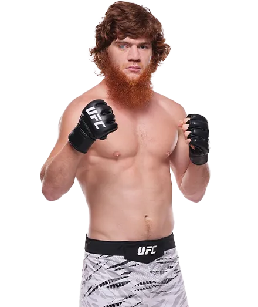

Shara Magomedov es un peleador profesional de artes marciales mixtas originario de Daguestán, Rusia. Se ha hecho conocido en la UFC por su estilo agresivo y sus espectaculares habilidades de striking.
Magomedov proviene de una región famosa por producir algunos de los mejores peleadores de combate del mundo. Aunque muchos peleadores de Daguestán destacan por su lucha, Shara se ha caracterizado principalmente por su striking explosivo y sus nocauts espectaculares.

Su estilo combina potencia, velocidad y creatividad en los golpes, lo que lo convierte en un peleador muy peligroso dentro del octágono.
A medida que su carrera continúa desarrollándose, muchos fanáticos consideran que tiene el potencial para convertirse en una de las figuras importantes de su división en la UFC.
Peso medio (185 lb / 84 kg)
Varias victorias por nocaut que han llamado la atención de los fanáticos.